Thème 1, 1914-1945. Trois chapitres sont dans le cahier :
civils et militaires pendant la Première Guerre mondiale, l’URSS de Staline (1924-1953),
puis le début de l’Allemagne nazie (1933-1945).
Le manuel, chapitre 2 (p. 62-71), est aussi résumé : ses cartes portent le tag « Manuel ».
La lecture complète reprend le cours. La synthèse suit les dates.
L’extra va plus loin que le cahier, dans le même chapitre.
Frise de la couverture
Repères écrits sur la première page du cahier, complétés par les trois chapitres étudiés.
Découverte de l’Amérique. Repère de couverture, pas encore de leçon.
Révolution française. Repère de couverture, pas encore de leçon. Retouche : la couverture indique « 1792 », c’est une erreur. La Révolution commence en 1789 ; 1792 est l’année de la proclamation de la Ire République.
Première Guerre mondiale. Chapitre 1.
L’URSS de Staline. Chapitre 2.
L’Allemagne nazie : Hitler détient tous les pouvoirs. Chapitre 3.
Seconde Guerre mondiale. Annoncée sur la couverture, pas encore de leçon.
Chapitre 1, en dates
Compétence du cours : repères chronologiques et étude de documents.
Attentat de Sarajevo : l’héritier d’Autriche-Hongrie est assassiné par un Serbe. L’Autriche-Hongrie déclare la guerre à la Serbie, la Russie entre à son tour. Les alliances s’enchaînent.
Triple Entente : France, Royaume-Uni, Russie, rejoints ensuite par l’Italie, la Grèce, la Roumanie et le Portugal. Triple Alliance, les empires centraux : Autriche-Hongrie et Allemagne, rejoints par la Bulgarie et l’Empire ottoman. Guerre de mouvement, puis guerre de position.
Génocide des Arméniens dans l’Empire ottoman. 1,5 million de morts, environ les deux tiers de la communauté arménienne de l’Empire ottoman.
Verdun. Plus de 300 000 morts et plus de 400 000 blessés. Le front bouge très peu. Les Français empêchent la percée allemande.
Mutineries. Les États-Unis entrent aux côtés de la Triple Entente. Février : le tsar abdique. 24-25 octobre : les bolcheviks, menés par Lénine et Trotski, prennent le pouvoir. La Russie quitte la guerre.
Armistice de Rethondes. On cesse les combats.
Traité de Versailles. L’Allemagne est jugée responsable, paie, perd des territoires et des colonies, et se voit privée de sa puissance militaire. Le cours parle d’une paix fragile et humiliante.
À retenir
Deux alliances se font face. Les empires centraux sont limitrophes. L’Entente les prend en étau : ils doivent se battre sur deux fronts. L’Entente est plus nombreuse.
De nouvelles armes tuent en masse : obus, mitrailleuses, gaz, chars, lance-flammes. C’est une violence de masse, puis une guerre totale : le pays, les civils et de nombreux États sont pris dans la guerre.
À l’arrière, usines d’armement, femmes au travail, censure, pénurie, inflation. Dans le Nord et en Belgique, l’occupation pèse sur les habitants.
Bilan noté en fin de chapitre : environ 10 millions de morts, des millions de mutilés, des veuves, des orphelins, des dégâts matériels, la pénurie et l’inflation.
Chapitre 2, en dates : l’URSS de Staline
URSS : Union des républiques socialistes soviétiques. Compétences : carte mentale, langage oral et écrit, analyse de documents de propagande.
Ouvriers et paysans se soulèvent : le tsar abdique.
Les bolcheviks de Lénine et Trotski prennent le pouvoir. Lénine signe une paix séparée avec l’Allemagne et abolit la propriété privée : guerre civile.
Lénine meurt. Staline lui succède et poursuit sa tâche.
Famine en Ukraine, orchestrée par Staline : 6 millions de morts d’après le cours.
L’ouvrier Stakhanov bat un record de production à la mine. Le régime en fait un héros.
La Grande Terreur : délation, quotas d’exécution, procès truqués. Staline élimine « les ennemis du Parti », les grandes figures du Parti et ses anciens proches. 0,7 million de morts.
93 % des terres sont collectivisées. La collectivisation est forcée : les koulaks qui refusent sont déportés au goulag.
20 millions de déportés.
Fin du pouvoir de Staline (1924-1953).
À retenir : un système totalitaire
Un seul chef : Staline détient tous les pouvoirs. C’est une dictature.
Une idéologie, le communisme, et des symboles : drapeau rouge, couleur de la révolution ; marteau (les ouvriers) et faucille (les paysans) ; étoile, la révolution doit s’étendre au monde.
Le contrôle de la population par la propagande : omniprésente, elle montre la réalité « non pas telle qu’elle est, mais telle qu’elle devrait être ». Journaux, cinéastes et écrivains servent le régime. Chiffres truqués, héros inventés, grands rassemblements à la gloire du régime. Staline est déifié, glorifié : c’est le culte de la personnalité.
Le contrôle de la population par la Terreur : un système policier pour un contrôle permanent du peuple. La police politique, le NKVD : arrestations, torture, déportations au goulag. De 1936 à 1938, la Grande Terreur : procès truqués, quotas d’exécution, délation encouragée, 0,7 million de morts. Les anciens du Parti sont éliminés : ce sont les purges staliniennes.
Le contrôle de l’économie : agriculture collectivisée de force, priorité à l’industrie lourde. Le contrôle de l’économie est total.
Conclusion du cours, en rouge : système totalitaire : aucun individu n’échappe au contrôle du régime.
Chapitre 3, en dates : l’Allemagne nazie
Le cahier ne précise pas la compétence travaillée pour ce chapitre. Première question du cours : quelles causes portent Hitler au pouvoir ?
La République de Weimar est mise en place en Allemagne. Le cahier place le président Hindenburg à sa tête.
Traité de Versailles : le Diktat, l’humiliation. Hitler promet de laver l’affront et séduit les anciens combattants.
Création du NSDAP, le parti nazi.
Crise aux États-Unis. L’Amérique rapatrie ses capitaux investis en Europe : l’Allemagne plonge dans une crise profonde.
6 millions de chômeurs, un record absolu. Aux élections législatives, le parti nazi arrive en tête : les autres partis n’ont pas réussi à s’unir pour le contrer.
Hitler devient chancelier (Premier ministre).
Hindenburg meurt. Hitler détient tous les pouvoirs.
Hitler, le Führer, détient tous les pouvoirs : une dictature.
À retenir : l’Allemagne nazie
Pourquoi Hitler arrive au pouvoir : l’humiliation de Versailles, la peur des communistes (Hitler se présente comme le rempart), la crise de 1929 et ses 6 millions de chômeurs (Hitler se présente comme le sauveur, promet du travail et de l’aide sociale), le soutien de la grande bourgeoisie et des grands industriels, et la victoire aux législatives de 1932.
Un seul chef : Hitler, le Führer, détient tous les pouvoirs de 1933 à 1945 et le peuple le suit. C’est une dictature.
Une idéologie : le nazisme, antisémite et raciste. Des symboles : la croix gammée, le salut nazi, l’emblème du parti nazi, la race aryenne, le culte du corps, Mein Kampf, le livre de Hitler.
Le contrôle de la population par la propagande : le culte de la personnalité, la jeunesse embrigadée dès 10 ans, la supériorité de la race aryenne.
Le contrôle de la population par la Terreur : toute personne jugée « socialement nuisible » peut être arrêtée, déportée dans un camp, torturée ou exécutée. La police politique : la Gestapo.
Le contrôle de l’économie : une économie tournée vers la guerre, production d’armes, moins de chômeurs.
Manuel · chapitre 2 · p. 64-65
Le mot du manuel : régime totalitaire
Un régime totalitaire est une dictature qui contrôle l’ensemble de la société, au moyen :
d’un parti unique ;
de la terreur ;
de la propagande ;
du contrôle de l’économie.
Trois régimes totalitaires en Europe, fondés sur des idéologies différentes mais aux caractéristiques communes : le fascisme en Italie (Mussolini, 1922), le stalinisme en URSS (Staline, 1924), le nazisme en Allemagne (Hitler, 1933). Face à eux, les démocraties (France, Royaume-Uni), où le pouvoir appartient au peuple, sont fragilisées par la crise économique.
Cahier · partie 1 · 1914
Les forces en présence
Triple Entente : France, Royaume-Uni et Russie. Après 1914, l’Italie, la Grèce, la Roumanie et le Portugal les rejoignent.
Triple Alliance, les puissances centrales : Empire austro-hongrois et Empire allemand. La Bulgarie et l’Empire ottoman les rejoignent ensuite.
Le 28 juin 1914, l’héritier du trône d’Autriche-Hongrie est assassiné par un Serbe. L’enchaînement des alliances suit : l’Autriche-Hongrie déclare la guerre à la Serbie ; la Russie, alliée de la Serbie, mobilise, et l’Allemagne lui déclare la guerre le 1er août.
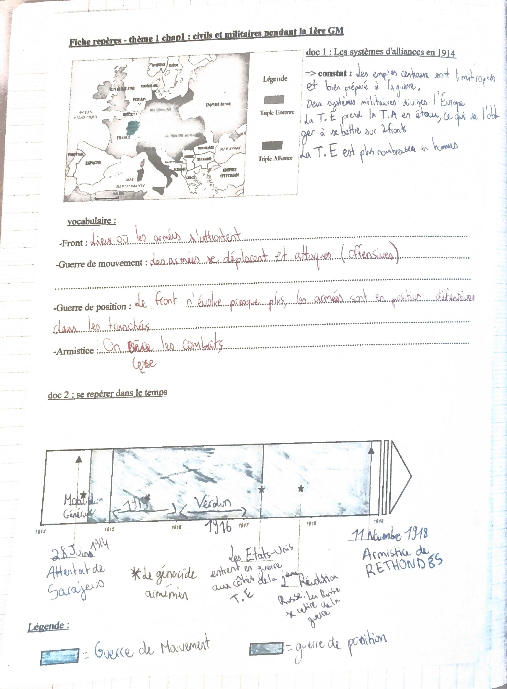
Document 1 du cahier. Constat écrit à côté de la carte : les empires centraux sont limitrophes et préparés à la guerre. Deux systèmes militaires divisent l’Europe. L’Entente prend l’Alliance en étau, donc deux fronts. L’Entente a plus d’hommes.Exercice du cahier
Les armes, et le passage à la violence de masse
Tu relèves : fusils, canon, obus, baïonnette, couteau, grenades, gaz asphyxiant, mitrailleuse, chars, avions équipés de mitrailleuses, lance-flammes.
Phrase de conclusion du cahier : de nouvelles armes ont pour but de tuer le plus grand nombre de soldats ennemis. On entre dans la violence de masse.
Autre réponse, sur la violence des combats : sur les fronts, des obus tombent à la seconde, des assauts sont lancés, les soldats se font mitrailler, reçoivent des obus, avancent parfois à partir de sacs de sable. Ils sentent la mort. Ils sont terrorisés.
Schéma du cahier
Les tranchées
Le front n’évolue presque plus. Les armées sont en défense dans les tranchées : c’est la guerre de position. Avant cela, les armées se déplacent et attaquent : c’est la guerre de mouvement. La frise du cahier colore en clair la guerre de mouvement, en foncé la guerre de position.
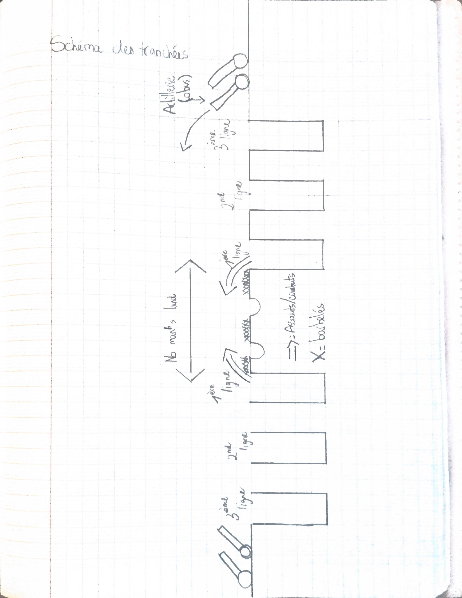
Trois lignes de chaque côté, artillerie à l’arrière, no man’s land au milieu, barbelés marqués d’une croix, assauts au centre.Cahier · 1915
Le génocide arménien
En 1915 a lieu un génocide. Il est commis sur les populations arméniennes de l’Empire ottoman. Des civils arméniens sont regroupés, puis déportés dans le désert syrien. Ils meurent de faim, de soif, d’épuisement et de maladies. Le cours donne 1,5 million de morts, soit les deux tiers de la communauté arménienne de l’Empire ottoman. La Turquie actuelle refuse de reconnaître ce génocide.
Ta réponse à l’exercice : les victimes sont les Arméniens, les bourreaux sont le gouvernement ottoman (les Jeunes-Turcs). Tu notes parmi les méthodes les violences, les marches forcées, la faim et la soif.
Génocide. Destruction, en partie ou en totalité, d’un peuple pour des raisons ethniques, raciales ou religieuses. Cela suppose une planification.
Cahier · partie 2 · 1916-1917
L’enfer de Verdun
Fév. – déc. 1916Durée de la bataille
+ de 300 000morts, d’après le cours
+ de 400 000blessés
Un front qui n’évolue que très peu. Pourtant les Français empêchent la percée allemande.
La souffrance des poilus : déluge de feu, peur, froid, boue, poux, fatigue. Des camarades meurent dans des assauts meurtriers. Des cadavres restent dans le no man’s land. Il y a le gaz et les rats.
En 1917, des mutineries éclatent. Des soldats désespérés refusent d’obéir aux ordres. Certains sont condamnés à mort par le tribunal militaire. Dans l’exercice, tu as écrit qu’ils en ont marre de la guerre et qu’ils se soulèvent pour la quitter.
Le cours donne aussi un bilan plus large de la mobilisation : environ 70 millions de soldats mobilisés, Européens, Américains et soldats des colonies, plus de 9 millions de tués et 6 millions de mutilés. La fin du chapitre arrondit le bilan à 10 millions de morts.
Cahier · partie 3
À l’arrière, une mobilisation totale
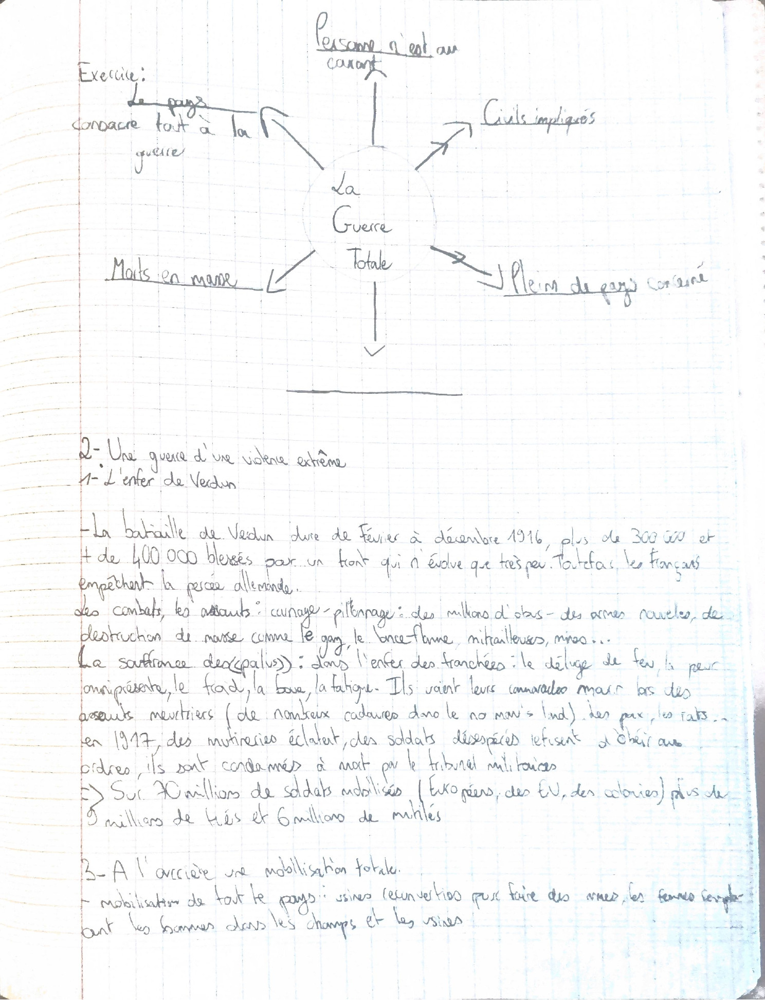
Schéma « la guerre totale ». Branches lisibles : le pays consacre tout à la guerre, les civils sont impliqués, de nombreux pays sont concernés, les morts sont en masse.
Mobilisation de tout le pays. Des usines sont reconverties pour faire des armes. Les femmes remplacent les hommes dans les champs et les usines.
Les lettres des poilus sont censurées.
Les civils connaissent la pénurie et l’inflation.
En Belgique et dans le Nord de la France, les habitants supportent le poids de l’occupation : travail forcé, réquisitions.
Cahier · partie 5 · 1917-1918
Le bouleversement à l’Est, puis en Europe
Février 1917 : un mouvement révolutionnaire, ouvriers et paysans, conduit le tsar à abdiquer. Tu notes aussi les échecs militaires de la Russie.
24 et 25 octobre 1917 : les bolcheviks, communistes révolutionnaires dirigés par Lénine et Trotski, prennent le pouvoir. Retouche : le cahier dit « parti social-communiste fondé par Lénine » ; les bolcheviks sont en fait la branche, menée par Lénine, du parti social-démocrate russe.
Décisions de Lénine notées ensuite : paix séparée avec l’Allemagne, abolition de la propriété privée, guerre civile.
En Europe : vague de grèves. Certains mouvements s’inspirent du modèle russe, comme les spartakistes en Allemagne. Ces mouvements échouent.
1917, sur la frise : les États-Unis entrent en guerre aux côtés de la Triple Entente.
11 novembre 1918 : armistice de Rethondes.
Cahier · partie 6 · juin 1919
Une paix fragile
Paix officielle, extraite du traité de Versailles, juin 1919.
L’Allemagne rend l’Alsace-Lorraine à la France, annexée en 1871 par l’Allemagne après la guerre de 1870.
Elle cède une bande au sud du Danemark, toutes ses colonies, et un territoire à l’est donné à la Pologne : le couloir de Dantzig, qui coupe l’Allemagne en deux.
Elle est privée de sa puissance militaire. La Rhénanie, le long du Rhin, est occupée.
Elle est jugée responsable de la guerre et doit payer des réparations, dont le montant est fixé en 1921 à 132 milliards de marks-or.
Le cours dit qu’elle est vue comme un « géant enchaîné » par les articles du traité, jugés ignominieux et accablants. C’est une paix humiliante, le Diktat, selon les Allemands qui n’ont pas pu participer aux négociations.
D’autres traités démembrent ensuite les empires centraux.
Ta réponse à l’exercice sur l’Allemagne : elle doit faire la paix avec la France, payer, elle est tenue pour la cause du début de la guerre, elle perd des colonies et des territoires, son économie est en désordre.
Bilan du chapitre : 10 millions de morts, des millions de mutilés, des veuves, des orphelins, des dégâts matériels importants, pénurie et inflation.
Vocabulaire du chapitre
Front
Lieu où les armées s’affrontent.
Guerre de mouvement
Les armées se déplacent et attaquent. Ce sont des offensives.
Guerre de position
Le front n’évolue presque plus. Les armées sont en position défensive dans les tranchées.
Armistice
On cesse les combats.
Pénurie
Manque.
Inflation
Très forte hausse des prix.
Réquisition
Ordre qui oblige à fournir un service ou un bien matériel.
Génocide
Destruction en partie ou en totalité d’un peuple, pour des raisons ethniques, raciales ou religieuses. Suppose une planification.
Chapitre 2 · introduction
L’URSS de Staline (1924-1953)
URSS : Union des républiques socialistes soviétiques.
Compétences : pratiquer différents langages (élaboration de carte mentale, langage oral et écrit) ; analyser des documents de propagande.
Le bouleversement à l’Est
Février 1917 : un mouvement révolutionnaire, ouvriers et paysans, conduit le tsar à abdiquer.
24 et 25 octobre 1917 : les bolcheviks, communistes révolutionnaires dirigés par Lénine et Trotski, s’emparent du pouvoir.
Aussitôt, deux mesures sont prises par Lénine : la signature d’une paix séparée avec l’Allemagne, et l’abolition de la propriété privée, qui mène à la guerre civile.
Lénine meurt en 1924. Staline prend alors le pouvoir et le garde de 1924 à 1953. Il succède à Lénine et va poursuivre la tâche entreprise par ce dernier.
Carte mentale du cahier
L’URSS de Staline : un système totalitaire
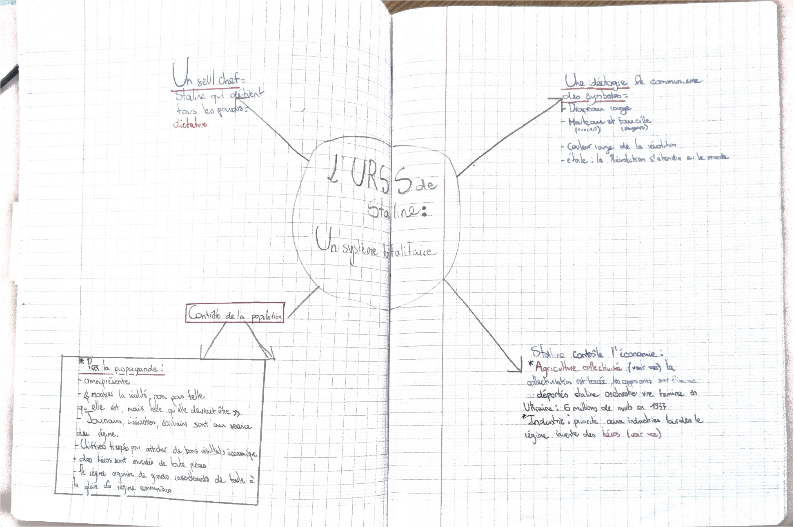
Carte mentale sur une double page. Quatre branches autour du titre : un seul chef, une idéologie, le contrôle de la population (par la propagande, par la Terreur), le contrôle de l’économie. La branche « par la Terreur », en rouge, a été complétée dans le nouveau scan.
Un seul chef : Staline, qui détient tous les pouvoirs. C’est une dictature.
Une idéologie, le communisme, et des symboles :
le drapeau rouge, couleur de la révolution ;
le marteau (les ouvriers) et la faucille (les paysans) ;
l’étoile : la révolution doit s’étendre au monde.
Le contrôle de la population, par la propagande :
elle est omniprésente ;
elle veut « montrer la réalité, non pas telle qu’elle est, mais telle qu’elle devrait être » ;
journaux, cinéastes et écrivains sont au service du régime ;
les chiffres sont truqués pour afficher de bons résultats économiques ;
des héros sont inventés de toutes pièces ;
le régime organise de grands rassemblements de foule à la gloire du régime communiste.
Le contrôle de la population, par la Terreur :
un système policier pour un contrôle permanent du peuple ;
la police politique, le NKVD : arrestations, torture, déportations dans les goulags (voir vocabulaire) ;
de 1936 à 1938 : la Grande Terreur, procès truqués, quotas d’exécution, délation encouragée (0,7 million de morts).
Staline contrôle l’économie :
agriculture collectivisée (voir vocabulaire) : la collectivisation est forcée, les opposants sont éliminés ou déportés. Staline orchestre une famine en Ukraine : 6 millions de morts en 1932-1933 d’après le cours ;
industrie : priorité aux industries lourdes, le régime invente des héros (voir vocabulaire).
Les mots en rouge sont écrits en rouge dans le cahier. Le « voir voc » renvoie à un vocabulaire qui n’est toujours pas dans les pages numérisées : le vocabulaire du chapitre 2, plus bas, reprend les phrases du cours.
Cahier · 1. Dans les campagnes
La collectivisation forcée
Mise en place de la collectivisation dans les campagnes : mise en commun des terres, des bâtiments et des outils dans de grandes exploitations collectives. 93 % des terres sont collectivisées en 1937.
Mais la collectivisation est forcée. Les paysans, surtout les plus aisés, les koulaks, sont réticents. Malgré la propagande, ils redoutent la perte de leur autonomie et refusent de livrer leurs biens.
Le parti et la police politique, le NKVD, sont donc chargés de faire appliquer cette décision par la force. Ceux qui refusent sont déportés au goulag, camp de concentration et de travaux forcés.
Bilan : une famine (6 millions de morts d’après le cours) et 20 millions de déportés entre 1929 et 1953.
93 %des terres collectivisées en 1937
6 millionsde morts de la famine, d’après le cours
20 millionsde déportés entre 1929 et 1953
Exercices du cahier
Collectivisation et koulaks
Exercice : la collectivisation a-t-elle été mise en place en URSS ?(fin de la question en partie illisible sur le scan)
Ta réponse : oui, car il y a beaucoup plus de terres cultivées, car tout le monde doit travailler aux champs.
Retouche à vérifier : la réponse dit que la collectivisation donne plus de terres cultivées. Le cours, lui, insiste sur la contrainte, la famine et les déportations. À revoir avec la correction de la classe.
Exercice : quelle politique est menée contre les koulaks ?
Ta réponse : liquidation des contre-révolutionnaires, expédiés dans des camps de concentration. Les plus actifs sont fusillés. Déportation massive dans des camps de concentration (goulags), ration de famine.
Schéma du cahier
Le goulag
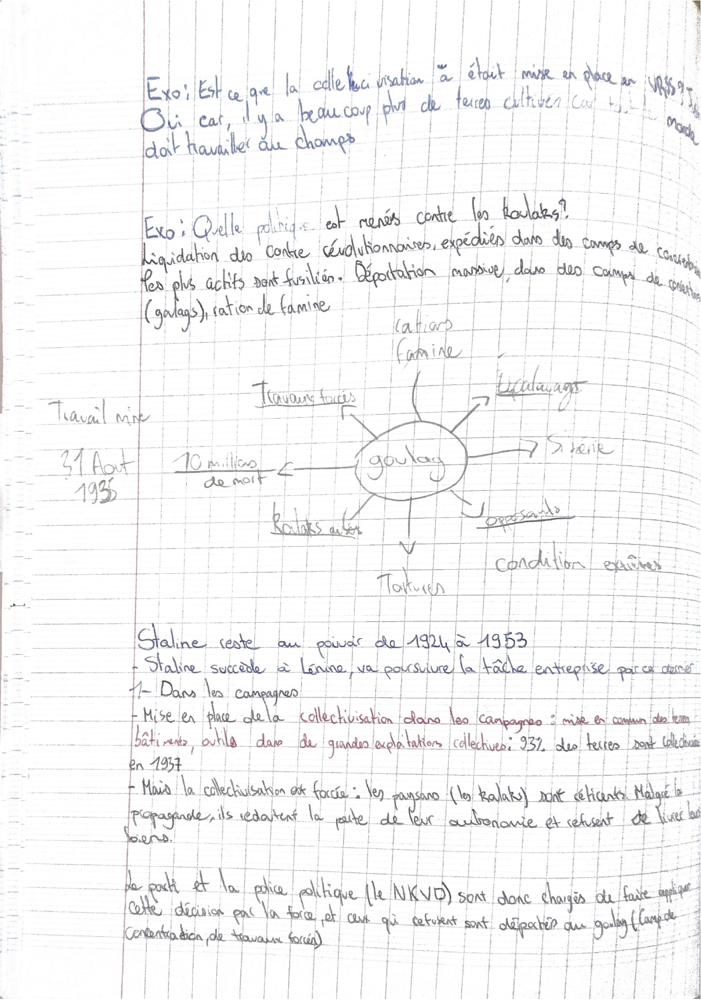
Schéma en étoile autour du mot « goulag », au crayon, au milieu de la page.
Branches du schéma : travaux forcés, rations de famine, esclavage, Sibérie, opposants, conditions extrêmes, tortures, koulaks arrêtés, 10 millions de morts.
Retouche à vérifier : « 10 millions de morts » est écrit sur le schéma. Les historiens comptent plutôt environ 18 millions de personnes passées par le goulag et 1,5 à 2 millions de morts dans les camps. À vérifier avec le cours de Mme Grillon. La lecture de « esclavage » et de « rations » est incertaine sur le scan.
Cahier · 2. Dans l’industrie
Priorité à l’industrie, et un héros : Stakhanov
Priorité à l’industrie lourde. Les chiffres sont truqués.
On invente des héros, comme l’ouvrier Stakhanov, qui a battu un record de productivité. Note en marge du cahier : travail à la mine, 31 août 1935.
Conclusion du cours, en rouge : le contrôle de l’économie est total.
Cahier · 3. Le contrôle des hommes
3. Le contrôle des hommes : purges, culte de la personnalité, Grande Terreur
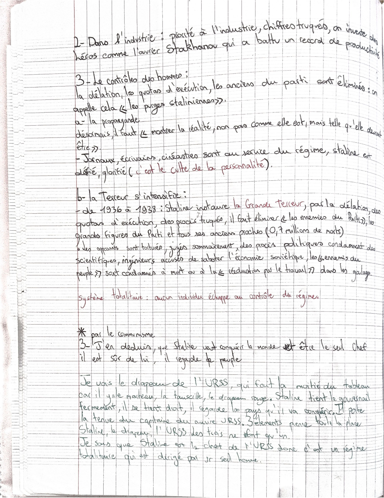
La leçon, avec en rouge « la Grande Terreur », « c’est le culte de la personnalité » et la phrase de conclusion. En bas de page, le début de ta réponse sur l’affiche de propagande.
La délation, les quotas d’exécution, les anciens du Parti sont éliminés : on appelle cela « les purges staliniennes ».
a. La propagande
Désormais, il faut « montrer la réalité, non pas comme elle est, mais telle qu’elle devrait être ».
Journaux, écrivains, cinéastes sont au service du régime.
Staline est déifié, glorifié : c’est le culte de la personnalité.
b. La Terreur s’intensifie
De 1936 à 1938, Staline instaure la Grande Terreur. Par la délation, des quotas d’exécution, des procès truqués, il fait éliminer « les ennemis du Parti », les grandes figures du Parti et tous ses anciens proches : 0,7 million de morts.
Les opposants sont torturés, jugés sommairement. Des procès politiques condamnent des scientifiques, des ingénieurs accusés de saboter l’économie soviétique.
Les « ennemis du peuple » sont condamnés à mort ou à la « rééducation par le travail » dans les goulags.
Conclusion du cours, en rouge : système totalitaire : aucun individu n’échappe au contrôle du régime.
Schéma du cahier
Le schéma « Terreur »
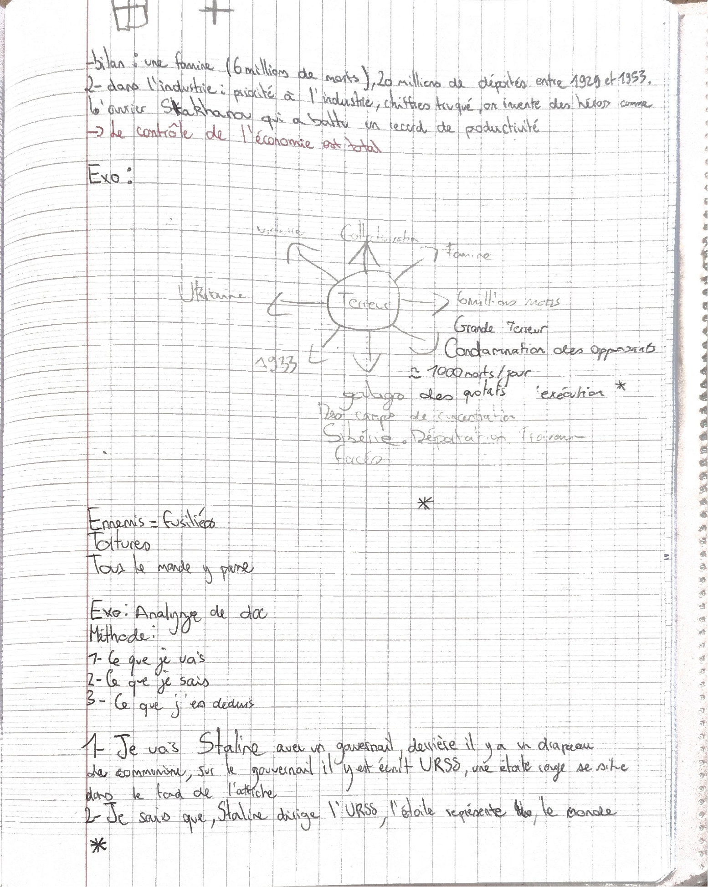
En haut, le bilan du contrôle de l’économie. Au milieu, le schéma en étoile autour du mot « Terreur », au crayon. En bas, la méthode d’analyse de document.
Branches du schéma : victimes, collectivisation, famine, Ukraine, 1933, 6 millions de morts, Grande Terreur, condamnation des opposants, environ 1 000 morts par jour, goulags, quotas d’exécution, déportation, camps de concentration, Sibérie, travaux forcés.
En dessous, tu as écrit : ennemis = fusillés, torturés, tout le monde y passe.
Retouche : dans un brouillon, « 1 000 morts par jour » et « 6 millions de morts condamnés » mélangent deux épisodes différents. La famine de 1933 en Ukraine (environ 6 millions de morts d’après le cours) et la Grande Terreur de 1936-1938 (0,7 million d’exécutés, soit environ 700 000 personnes) sont deux choses distinctes. Le « 0,7 M » du cahier correspond bien aux exécutions de 1936-1938.
Méthode du cahier
Méthode : analyser une affiche de propagande
Trois étapes, dans l’ordre : 1. Ce que je vois, 2. Ce que je sais, 3. Ce que j’en déduis.
Affiche 1 : Staline au gouvernail
Je vois : Staline tient un gouvernail sur lequel est écrit « URSS ». Derrière lui, le drapeau rouge avec le marteau et la faucille occupe la moitié de l’affiche, et une étoile rouge est dans le fond. Staline porte la tenue d’un capitaine de navire, il se tient droit et regarde devant lui. Trois éléments prennent toute la place : Staline, le drapeau, l’URSS ; les trois ne font qu’un.
Je sais : Staline dirige seul l’URSS, c’est un régime totalitaire dirigé par un seul homme. L’étoile représente la révolution qui doit s’étendre au monde.
J’en déduis : Staline veut conquérir le monde et être le seul chef. Il est sûr de lui, il regarde le peuple.
Affiche 2 : Staline avec des enfants
Je vois : Staline avec des enfants qui ont l’air joyeux, souriants et habillés correctement. Il regarde les enfants. Au fond, une ville et de la verdure, le drapeau de l’URSS et l’étoile rouge. Staline porte un ensemble de capitaine. Un petit lui offre un dessin du Kremlin en rouge avec les symboles du communisme.
Je sais : Staline dirige seul l’URSS, régime totalitaire. Il n’aime pas le peuple, et le peuple le craint : Grande Terreur de 1936 à 1938, famine de 1933 avec 6 millions de morts.
J’en déduis : c’est de la propagande, pour faire croire que l’URSS va bien et que les gens sont contents d’être communistes, ce qui n’est pas le cas du tout. Staline est présenté comme un père protecteur, déifié : c’est le culte de la personnalité. Staline manipule la jeunesse et encourage à dénoncer toute opposition.
Les réponses sont résumées à partir de plusieurs brouillons du cahier. La deuxième affiche est décrite sur une page qui n’est pas affichée ici.
Vocabulaire du chapitre 2
URSS
Union des républiques socialistes soviétiques.
Dictature
Un seul chef détient tous les pouvoirs.
Système totalitaire
Un seul chef, une idéologie, le contrôle de la population par la propagande et la Terreur, le contrôle de l’économie : aucun individu n’échappe au contrôle du régime.
Collectivisation
Mise en commun des terres, des bâtiments et des outils dans de grandes exploitations collectives.
Koulaks
Paysans aisés, propriétaires de leurs terres, réticents à la collectivisation : ils refusent de livrer leurs biens. Le régime en fait des ennemis et les déporte.
NKVD
La police politique : arrestations, torture, déportations dans les goulags. Chargée avec le parti d’imposer la collectivisation par la force.
Goulag
Camp de concentration et de travaux forcés où sont déportés ceux qui refusent, et où les « ennemis du peuple » sont envoyés en « rééducation par le travail ».
Propagande
Montrer la réalité non pas telle qu’elle est, mais telle qu’elle devrait être. Elle est omniprésente.
Culte de la personnalité
Staline est déifié, glorifié par la propagande : journaux, écrivains et cinéastes le présentent comme un père protecteur.
Purges staliniennes
L’élimination des anciens du Parti, par la délation et des quotas d’exécution.
Grande Terreur
De 1936 à 1938, Staline fait éliminer « les ennemis du Parti », les grandes figures du Parti et ses anciens proches par la délation, des quotas d’exécution et des procès truqués. 0,7 million de morts.
Le cahier ne donne pas de définition formelle de ces mots : les définitions reprennent les phrases du cours.
Chapitre 3 · I. Quelles causes portent Hitler au pouvoir ?
L’Allemagne nazie : l’arrivée de Hitler au pouvoir
Le cahier laisse la ligne « compétence travaillée » vide pour ce chapitre.
Intro. En Allemagne, le régime de la République de Weimar est mis en place dès 1918. Le président Hindenburg est à sa tête.
Retouche : la République de Weimar est bien proclamée en novembre 1918, mais son premier président est Friedrich Ebert. Hindenburg n’est élu président qu’en 1925, et c’est bien lui qui est à la tête de l’État au moment de l’arrivée de Hitler.
Un contexte favorable aux nazis
Laver l’affront de Versailles, le Diktat, l’humiliation : Hitler séduit les anciens combattants.
La peur des communistes : l’Allemagne est touchée par des violences des partis extrémistes, notamment les communistes. Hitler se présente comme le rempart contre les communistes.
La crise de 1929, survenue aux États-Unis, plonge l’Amérique dans une crise profonde (chômage, faillites). Le pays rapatrie alors les capitaux investis en Europe, ce qui plonge l’Allemagne dans une crise profonde : 6 millions de chômeurs en 1932, un record absolu. Hitler se présente comme le sauveur, promet du travail et un programme d’aide sociale.
Le soutien des élites : la grande bourgeoisie et les grands industriels apportent leur soutien à Hitler. Plutôt les nazis que les communistes.
Les élections de 1932 : aux élections législatives, le parti nazi arrive en tête. Les autres partis n’ont pas réussi à s’unir pour le contrer.
1918République de Weimar
6 millionsde chômeurs en 1932, un record absolu
1932le parti nazi en tête aux législatives
Carte mentale du cahier
L’Allemagne nazie : un seul chef, une idéologie
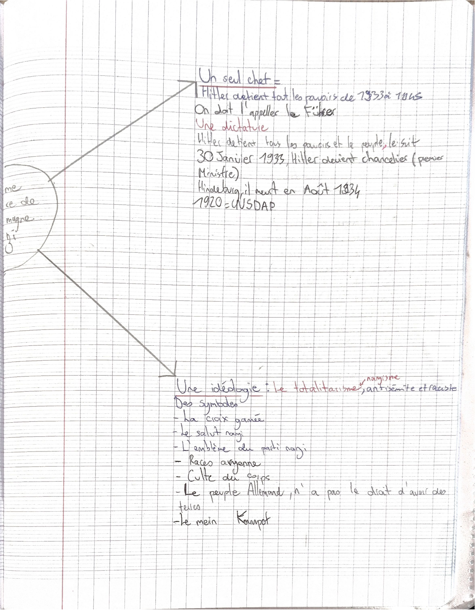
Première page de la carte mentale « L’Allemagne nazie ». En rouge : « Une dictature » et « Une idéologie ». Le mot « nazisme » est ajouté au-dessus de « totalitarisme ».
Un seul chef : Hitler détient tous les pouvoirs de 1933 à 1945. On doit l’appeler le Führer. Une dictature : Hitler détient tous les pouvoirs et le peuple le suit.
1920 : création du NSDAP, le parti nazi ;
30 janvier 1933 : Hitler devient chancelier (Premier ministre) ;
août 1934 : Hindenburg meurt.
Une idéologie : le totalitarisme, le nazisme, antisémite et raciste. Des symboles :
la croix gammée ;
le salut nazi ;
l’emblème du parti nazi ;
la race aryenne ;
le culte du corps : « le peuple allemand n’a pas le droit d’avoir des failles » ;
Mein Kampf, le livre de Hitler.
Retouche : le cahier écrit « Une idéologie : le totalitarisme ». Le totalitarisme est plutôt le type de régime (comme pour l’URSS de Staline) ; l’idéologie, c’est le nazisme : raciste, antisémite, nationaliste. Le mot « nazisme » a d’ailleurs été rajouté au-dessus dans le cahier.
Carte mentale du cahier
L’Allemagne nazie : contrôle de la population, contrôle de l’économie
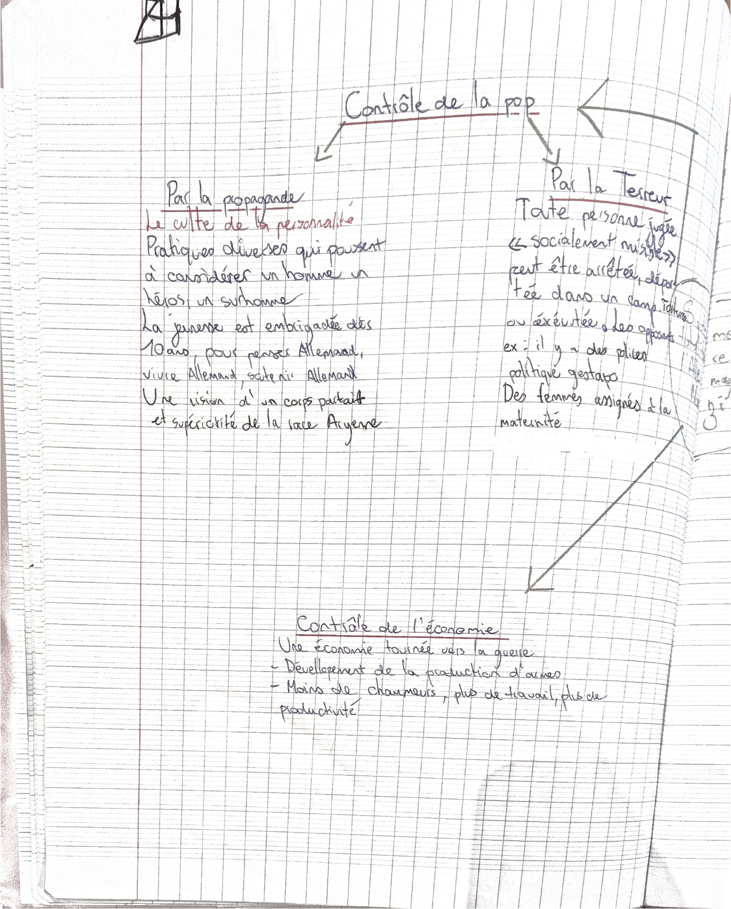
Deuxième page de la carte mentale. En rouge : « Par la propagande », « Le culte de la personnalité », « Par la Terreur », « Contrôle de l’économie ».
Le contrôle de la population, par la propagande :
le culte de la personnalité : des pratiques diverses qui poussent à considérer un homme comme un héros, un surhomme ;
la jeunesse est embrigadée dès 10 ans, pour penser allemand, vivre allemand, soutenir l’Allemagne ;
une vision d’un corps parfait et la supériorité de la race aryenne.
Le contrôle de la population, par la Terreur :
toute personne jugée « socialement nuisible » peut être arrêtée, déportée dans un camp, torturée ou exécutée ; les opposants ;
exemple : il y a des polices politiques, la Gestapo ;
des femmes assignées à la maternité.
Le contrôle de l’économie : une économie tournée vers la guerre.
développement de la production d’armes ;
moins de chômeurs, plus de travail, plus de productivité.
Les mots en rouge sont écrits en rouge dans le cahier. La carte mentale apparaît deux fois dans le scan (pages recopiées) : elle n’est affichée qu’une fois ici.
Vocabulaire du chapitre 3
République de Weimar
Le régime mis en place en Allemagne dès 1918, après la défaite. Le président Hindenburg est à sa tête quand Hitler devient chancelier.
Diktat
Nom donné par les Allemands au traité de Versailles : une paix humiliante, imposée sans eux. Hitler promet de laver cet affront.
NSDAP
Le parti nazi, créé en 1920. Il arrive en tête aux élections législatives de 1932.
Chancelier
Le Premier ministre en Allemagne. Hitler le devient le 30 janvier 1933.
Führer
« Le guide ». Le nom que l’on doit donner à Hitler, qui détient tous les pouvoirs de 1933 à 1945.
Gestapo
La police politique de l’Allemagne nazie. Elle arrête, déporte, torture ou exécute toute personne jugée « socialement nuisible ».
Race aryenne
La race que les nazis prétendent supérieure. Le régime impose une vision d’un corps parfait et le culte du corps.
Culte de la personnalité
Des pratiques diverses qui poussent à considérer un homme comme un héros, un surhomme.
Mein Kampf
Le livre de Hitler, où il expose l’idéologie nazie.
Le cahier ne donne pas de définition formelle de ces mots, sauf pour le culte de la personnalité : les autres définitions reprennent les phrases du cours. La traduction « le guide » n’est pas dans le cahier.
Manuel · chapitre 2 · p. 62-63
Ce que le manuel demande de savoir faire
Chapitre 2 du manuel : Démocraties et totalitarismes dans l’entre-deux-guerres. Il complète les chapitres 2 et 3 du cahier (l’URSS de Staline, l’Allemagne nazie).
Ouverture : après la Première Guerre mondiale, des régimes totalitaires apparaissent (Italie, URSS, Allemagne). Face à eux, les démocraties (France, Royaume-Uni) cherchent à résister. Le témoin choisi est Albert Einstein, physicien juif allemand, qui doit fuir son pays après l’arrivée au pouvoir de Hitler en 1933. La photo d’ouverture montre Hitler au Reichstag (l’assemblée allemande) en 1939, dominé par les nazis : à partir de janvier 1933, la démocratie disparaît, le NSDAP est le seul parti autorisé.
Problématique : quels régimes politiques s’opposent dans l’Europe de l’entre-deux-guerres ?
Décrire les caractéristiques d’un régime totalitaire.
Expliquer les différences entre régimes totalitaires et démocraties.
Raconter comment l’État contrôle et embrigade les sociétés dans les régimes totalitaires.
Le thème I du manuel, « L’Europe, un théâtre majeur des guerres totales (1914-1945) », compte quatre chapitres : la Première Guerre mondiale ; démocraties et totalitarismes dans l’entre-deux-guerres ; la Seconde Guerre mondiale ; la France dans la Seconde Guerre mondiale.
« Que sais-je ? » du manuel, en rappel : la Triple-Entente réunit la France, la Russie et la Grande-Bretagne ; les communistes arrivent au pouvoir en URSS par la force, après la révolution d’octobre 1917 ; le traité signé en 1919 est celui de Versailles.
Manuel · chapitre 2 · p. 64-69
Les notions du manuel
Régime totalitaire
Une dictature qui contrôle l’ensemble de la société, au moyen d’un parti unique, de la terreur, de la propagande et du contrôle de l’économie.
Démocratie
Régime politique dans lequel le pouvoir appartient au peuple.
Idéologie
Ensemble d’idées politiques, économiques et sociales qui constituent une vision du monde et guident le choix d’un système politique.
Parti unique
Seul parti politique autorisé dans un régime totalitaire. Il contrôle étroitement l’État.
Terreur
Les régimes totalitaires s’appuient sur l’exercice de la terreur : toute personne jugée « socialement nuisible » peut être arrêtée, déportée dans un camp ou exécutée.
Culte de la personnalité
Pratiques diverses (éloges, diffusion de portraits, etc.) qui poussent à considérer un homme comme un héros, un surhomme.
Nazisme
Idéologie raciste, antisémite, agressive et totalitaire élaborée par Hitler.
Collectivisation
Mise en commun des terres agricoles dans de grandes exploitations collectives.
Kolkhoze
Exploitation agricole appartenant à un groupe de paysans, qui mettent en commun leurs terres, leur bétail et leurs outils.
Koulak
Paysan aisé opposé à la collectivisation.
Dictature du prolétariat
Pour Lénine, l’étape obligée vers le communisme : la classe ouvrière, exploitée par le capitalisme, prend le pouvoir pour briser la résistance des capitalistes.
Komintern
La IIIe Internationale, créée par Lénine en 1919 pour coordonner l’action de tous les partis communistes et permettre une révolution communiste mondiale.
Plan quinquennal
Programme économique fixé par l’État pour cinq ans. Le premier (1929-1933) doit faire passer l’URSS d’un pays agraire et arriéré à un pays industriel et puissant.
Grand tournant et dékoulakisation
En 1929, Staline décide d’exproprier les paysans et de collectiviser les terres : c’est le « Grand tournant ». La dékoulakisation est la suppression des koulaks, décidée la même année.
Les définitions de « dictature du prolétariat », « Komintern », « plan quinquennal » et « Grand tournant » sont reformulées à partir des documents du manuel ; les autres sont les notions et le vocabulaire tels que le manuel les écrit. Le cahier dit « système totalitaire », le manuel « régime totalitaire » : c’est la même idée.
Manuel · chapitre 2 · p. 64-65 · repères
L’Europe en 1938 : trois totalitarismes
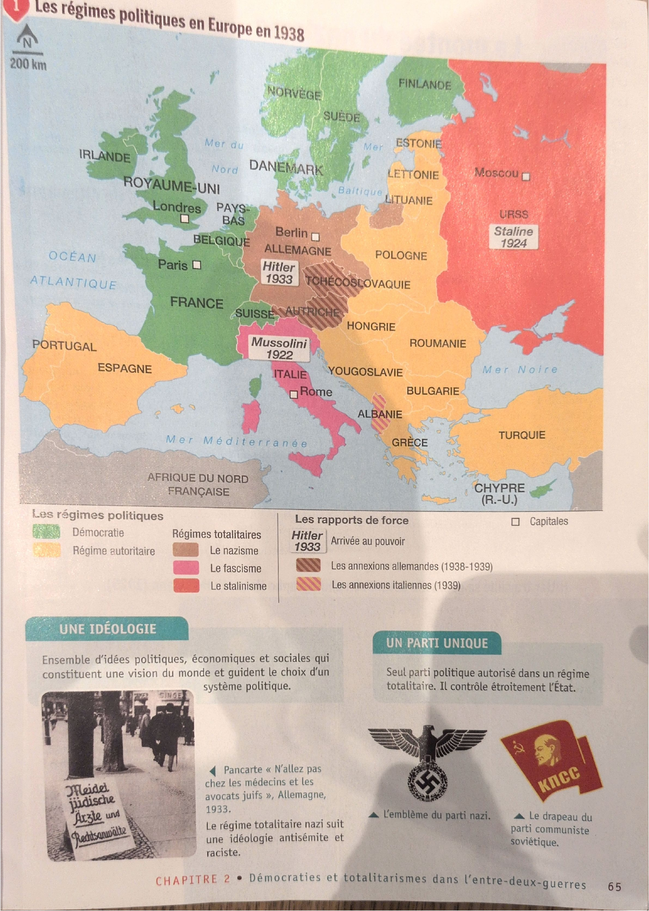
Carte du manuel, p. 65. Vert : démocraties. Jaune : régimes autoritaires. Brun, rose, rouge : les trois régimes totalitaires. Hachures : annexions allemandes (1938-1939) et italiennes (1939).
Dans un contexte de difficultés économiques et politiques, plusieurs régimes totalitaires apparaissent en Europe à la suite de la Première Guerre mondiale. Les démocraties sont fragilisées par la crise économique.
Les démocraties : France, Royaume-Uni, Irlande, Belgique, Pays-Bas, Suisse, Danemark, Norvège, Suède, Finlande, Tchécoslovaquie.
Les régimes autoritaires : Espagne, Portugal, Pologne, Hongrie, Roumanie, Bulgarie, Yougoslavie, Grèce, Turquie, les pays baltes (Estonie, Lettonie, Lituanie), l’Autriche avant son annexion.
Les régimes totalitaires, avec la date d’arrivée au pouvoir du chef : le fascisme en Italie, Mussolini, 1922 ; le stalinisme en URSS, Staline, 1924 ; le nazisme en Allemagne, Hitler, 1933.
Les rapports de force : annexions allemandes en 1938-1939 (l’Autriche, puis les Sudètes en Tchécoslovaquie), annexion italienne de l’Albanie en 1939.
Les photos des repères : la foule accueille Hitler à Nuremberg (1938) ; une manifestation contre l’extrême droite à Paris, le 14 juillet 1935 (le Rassemblement populaire) ; des prisonniers dans un camp de déportation et de travail, le goulag, en URSS vers 1932. Et pour illustrer l’idéologie nazie, antisémite et raciste : une pancarte « N’allez pas chez les médecins et les avocats juifs », Allemagne, 1933. Les deux partis uniques ont leur emblème : l’aigle et la croix gammée pour le parti nazi, Lénine sur le drapeau du parti communiste soviétique.
Pistes de travail du manuel : quels sont les trois régimes totalitaires en Europe à la veille de la Seconde Guerre mondiale ? Quels sont les chefs et les symboles du nazisme et du communisme ? Dans quels pays européens un régime démocratique est-il en place à la veille de la guerre ? Sur quelles valeurs ces régimes sont-ils fondés ?
Manuel · chapitre 2 · p. 66-67 · dossier 1
Dossier 1 : la montée du nazisme
Compétence du manuel : je raconte. Problématique : comment et dans quel contexte le parti nazi s’impose-t-il en Allemagne ?
En 1919, l’Allemagne est déclarée responsable de la Première Guerre mondiale. Le traité de Versailles lui impose des conditions très dures, que le parti nazi dénonce. Celui-ci arrive au pouvoir dans un contexte de crise économique (frise du dossier : 28 juin 1919, traité de Versailles ; 1929-1939, crise économique).
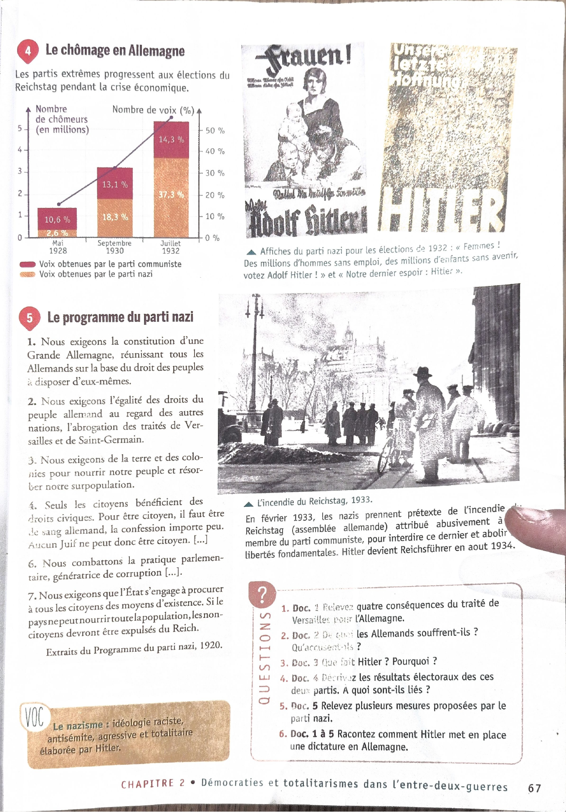
Page 67 du manuel : le graphique chômage / voix, les affiches nazies de 1932, le programme du parti nazi de 1920, l’incendie du Reichstag.
Doc 1 · Le traité de Versailles, le « Diktat »
Signé le 28 juin 1919 entre les Alliés et l’Allemagne. L’Alsace-Lorraine, cédée en 1871, revient à la France. L’armée allemande ne devra pas dépasser 100 000 hommes. La fabrication et l’importation de chars sont interdites. L’Allemagne reconnaît qu’elle et ses alliés sont responsables de toutes les pertes et de tous les dommages.
Doc 2 · L’influence du nazisme sur les jeunes
Melita Maschmann a 17 ans en 1933 et adhère aux Jeunesses hitlériennes. Ses parents se plaignaient sans cesse de l’appauvrissement de l’Allemagne, des millions de chômeurs en 1932, des réparations à payer. « Tous nos maux venaient du désastre national de Versailles. » Les adultes enseignaient que les Alliés étaient mauvais, ennemis de l’Allemagne. « Nous rêvions de nous sacrifier à un idéal. » (Ma jeunesse au service du nazisme.)
Doc 3 · Hitler travaille sa gestuelle
En 1925, Hitler pose devant son photographe Heinrich Hoffmann pour répéter ses gestes d’orateur : « visionnaire », « impératif », « combatif ».
Doc 4 · Le chômage en Allemagne
Les partis extrêmes progressent aux élections du Reichstag pendant la crise économique.
Mai 1928environ 1,3 million de chômeurs · communistes 10,6 % · nazis 2,6 %
Sept. 1930environ 3 millions de chômeurs · communistes 13,1 % · nazis 18,3 %
Juil. 1932environ 5,5 millions de chômeurs · communistes 14,3 % · nazis 37,3 %
Affiches nazies pour les élections de 1932 : « Femmes ! Des millions d’hommes sans emploi, des millions d’enfants sans avenir, votez Adolf Hitler ! » et « Notre dernier espoir : Hitler ».
Retouche : le cahier parle de 6 millions de chômeurs en 1932, le graphique du manuel en montre environ 5,5 millions en juillet 1932. Les deux chiffres sont compatibles : le pic de 6 millions est atteint au début de 1932, en hiver.
Doc 5 · Le programme du parti nazi (1920)
1. Une Grande Allemagne réunissant tous les Allemands.
2. L’égalité des droits du peuple allemand ; l’abrogation des traités de Versailles et de Saint-Germain.
3. De la terre et des colonies pour nourrir le peuple.
4. Seuls les citoyens bénéficient des droits civiques ; pour être citoyen il faut être de sang allemand : aucun Juif ne peut donc être citoyen.
6. Le parti combat la pratique parlementaire.
7. L’État doit procurer des moyens d’existence à tous les citoyens ; sinon, les non-citoyens devront être expulsés du Reich.
L’incendie du Reichstag, 1933
En février 1933, les nazis prennent prétexte de l’incendie du Reichstag (l’assemblée allemande), attribué abusivement à un membre du parti communiste, pour interdire ce dernier et abolir les libertés fondamentales. Le manuel écrit que Hitler devient « Reichsführer » en août 1934 : c’est le moment où, à la mort de Hindenburg, il cumule les fonctions de président et de chancelier, sous le titre de Führer et chancelier du Reich.
Biographie · Adolf Hitler (1889-1945)
Né en Autriche, il s’engage dans l’armée allemande en 1914. Humilié par la défaite, il s’engage dans le parti nazi (NSDAP). Après une tentative de coup d’État en 1923, il rédige Mein Kampf en prison. À la suite du succès du parti nazi aux élections législatives, il est nommé chancelier en janvier 1933.
Pistes de travail du dossier : 1. (doc 1) relève quatre conséquences du traité de Versailles pour l’Allemagne. 2. (doc 2) de quoi les Allemands souffrent-ils, qu’accusent-ils ? 3. (doc 3) que fait Hitler, pourquoi ? 4. (doc 4) décris les résultats électoraux des deux partis, à quoi sont-ils liés ? 5. (doc 5) relève plusieurs mesures proposées par le parti nazi. 6. (doc 1 à 5) raconte comment Hitler met en place une dictature en Allemagne.
Manuel · chapitre 2 · p. 68-69 · dossier 2
Dossier 2 : de Lénine à Staline, la construction du régime totalitaire soviétique
Compétence du manuel : je raconte. Problématique : de Lénine à Staline, comment le régime totalitaire soviétique s’établit-il ?
La révolution d’octobre 1917 porte Lénine, chef du parti bolchevique, au pouvoir. Pendant la guerre civile (1918-1921), il met en place une dictature. À la mort de Lénine, en 1924, Staline élimine tous ses opposants. Seul à la tête de l’URSS à partir de 1928, il instaure un pouvoir personnel et totalitaire fondé sur la terreur. Frise du dossier : 1918-1921, guerre civile ; 1924, mort de Lénine ; 1937-1938, « Grande Terreur » stalinienne.
Retouche : le cahier donne Staline au pouvoir de 1924 à 1953 ; le manuel le dit « seul à la tête de l’URSS à partir de 1928 ». Les deux sont vrais : en 1924 il succède à Lénine, en 1928 il a éliminé tous ses rivaux. De même, le cahier date la Grande Terreur de 1936 à 1938 et le manuel de 1937-1938 : les procès de Moscou commencent en août 1936, le pic des exécutions est en 1937-1938.
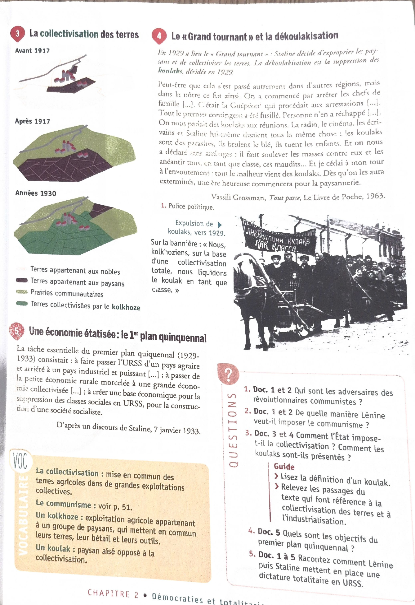
Page 69 du manuel : les trois schémas de la collectivisation (avant 1917, après 1917, années 1930), le témoignage de Grossman, le premier plan quinquennal, le vocabulaire.
Doc 1 · L’idéologie de Lénine
D’après L’État et la Révolution (1917) : la marche vers le communisme passe par la dictature du prolétariat, la classe ouvrière exploitée par le capitalisme, pour briser la résistance des capitalistes exploiteurs. « Ceux-là, nous devons les mater. » Quand il n’y a plus de classes, l’État cesse d’exister. Photo : Lénine et Trotski sur la place Rouge à Moscou, en 1920.
Doc 2 · Lénine et le Komintern
Affiche soviétique vers 1920 : « Le camarade Lénine nettoie la Terre de ses saletés superflues ». Lénine, un balai à la main, chasse les rois, les capitalistes et les prêtres. Pour coordonner l’action de tous les partis communistes et permettre une révolution communiste mondiale, Lénine crée la IIIe Internationale, ou Komintern, en 1919.
Biographie · Joseph Staline (1878-1953)
Né en Géorgie, Iossif Djougachvili, dit Staline (« homme d’acier »), se rallie aux idées de Lénine à 20 ans. Devenu bolchevik, il est arrêté et déporté à plusieurs reprises. Élu secrétaire général du parti communiste en 1922, il place des hommes de confiance à tous les postes importants. Après la mort de Lénine, il élimine tous ses adversaires, dont Trotski, et instaure à partir de 1928 une véritable dictature totalitaire.
Doc 3 et 4 · La collectivisation, le « Grand tournant » et la dékoulakisation
Trois schémas : avant 1917, les terres appartiennent aux nobles et aux paysans ; après 1917, aux paysans, avec des prairies communautaires ; dans les années 1930, les terres sont collectivisées par le kolkhoze. En 1929 a lieu le « Grand tournant » : Staline décide d’exproprier les paysans et de collectiviser les terres. La dékoulakisation est la suppression des koulaks, décidée en 1929.
Témoignage de Vassili Grossman (Tout passe, 1963) : on a commencé par arrêter les chefs de famille, c’était la Guépéou, la police politique. La radio, le cinéma, les écrivains et Staline lui-même disaient tous la même chose : les koulaks sont des parasites, ils brûlent le blé, ils tuent les enfants ; il faut soulever les masses contre eux et les anéantir en tant que classe. « Tout le malheur vient des koulaks. » Photo : expulsion de koulaks vers 1929, avec la bannière « Nous, kolkhoziens, sur la base d’une collectivisation totale, nous liquidons le koulak en tant que classe ».
La Guépéou (GPU) est le nom de la police politique soviétique au début des années 1930 ; en 1934 elle est intégrée au NKVD, le nom que donne le cahier.
Doc 5 · Une économie étatisée : le premier plan quinquennal (1929-1933)
D’après un discours de Staline du 7 janvier 1933, la tâche essentielle du premier plan quinquennal consistait à faire passer l’URSS d’un pays agraire et arriéré à un pays industriel et puissant ; à passer de la petite économie rurale morcelée à une grande économie collectivisée ; à créer une base économique pour la suppression des classes sociales et la construction d’une société socialiste.
Pistes de travail du dossier : 1. (doc 1 et 2) qui sont les adversaires des révolutionnaires communistes ? 2. de quelle manière Lénine veut-il imposer le communisme ? 3. (doc 3 et 4) comment l’État impose-t-il la collectivisation, comment les koulaks sont-ils présentés ? 4. (doc 5) quels sont les objectifs du premier plan quinquennal ? 5. raconte comment Lénine puis Staline mettent en place une dictature totalitaire en URSS.
Manuel · chapitre 2 · p. 70-71 · dossier guidé 3
Dossier 3 : l’embrigadement des sociétés
Compétence du manuel : je travaille en autonomie. Problématique : comment les régimes totalitaires endoctrinent-ils les sociétés ?
Dans l’Allemagne nazie et dans l’URSS de Staline, l’État contrôle la vie et la pensée de sa population, en l’encadrant dans des organisations de masse et au moyen de la propagande.
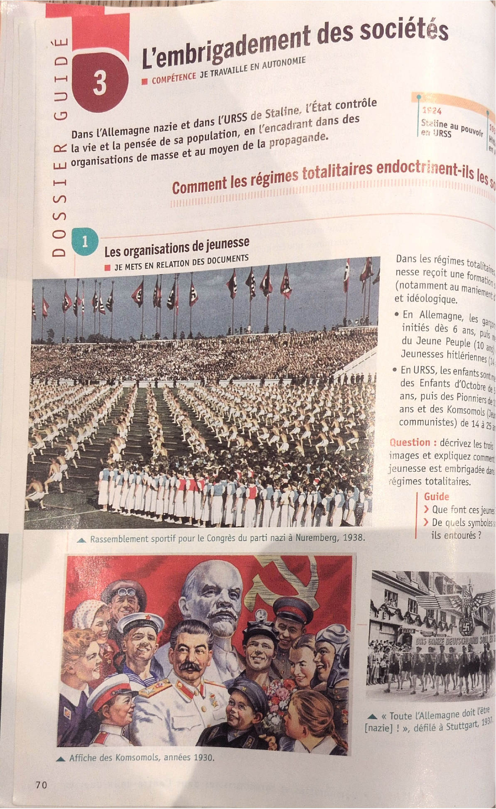
Page 70 du manuel : rassemblement sportif pour le congrès du parti nazi à Nuremberg (1938), affiche des Komsomols (années 1930), défilé « Toute l’Allemagne doit être nazie ! » à Stuttgart. Le bord droit de la page est coupé sur le scan.
Doc 1 · Les organisations de jeunesse
Dans les régimes totalitaires, la jeunesse reçoit une formation physique (notamment le maniement des armes) et idéologique.
En Allemagne : les garçons sont initiés dès 6 ans, puis entrent au Jeune Peuple à 10 ans, puis aux Jeunesses hitlériennes de 14 à 18 ans.
En URSS : les enfants sont des Enfants d’Octobre (jusqu’à 9 ans), puis des Pionniers (10 à 14 ans), puis des Komsomols, les Jeunesses communistes, à partir de 14 ans.
Le cahier dit « la jeunesse est embrigadée dès 10 ans » : c’est l’âge d’entrée au Jeune Peuple en Allemagne et chez les Pionniers en URSS. La borne haute des Komsomols est coupée sur le scan (lecture incertaine : jusqu’à 28 ans environ).
Doc 2 · Le culte de la personnalité
Deux affiches à comparer : « Vive l’Allemagne » (affiche nazie, 1935), Hitler dressé comme un étendard devant l’aigle et la foule ; Staline en « petit père des peuples » (affiche soviétique, 1937), entouré d’une foule souriante et de fleurs.
Doc 3 · Les manifestations de masse
Défilé sportif des Pionniers sur la place Rouge à Moscou, en juin 1935. Défilé des SS, la garde personnelle de Hitler, en l’honneur de l’anniversaire de Hitler, le 20 avril 1939.
Pistes de travail du dossier : décris les trois images des organisations de jeunesse et explique comment la jeunesse est embrigadée (que font les jeunes, de quels symboles sont-ils entourés ?) ; explique en quoi consiste le culte de la personnalité (contexte des deux affiches, personnages, attitude et gestes, objets et personnes qui les entourent) ; quel est le rôle des rassemblements de masse dans les États totalitaires (où et à quelles occasions, quelle impression, quels symboles, où est la population et que fait-elle) ? Synthèse : décris les moyens utilisés par les dictateurs pour embrigader leur population et explique comment les régimes totalitaires encadrent les sociétés.
Cette partie n’est pas dans ton cahier. Ce sont des connaissances ajoutées, dans le périmètre du chapitre, pour aller plus loin. Ce qui compte pour le contrôle reste le cours de Mme Grillon.
Extra · avant la guerre
Pourquoi l’Europe s’embrase
Les grandes puissances sont rivales : pour les colonies, pour l’industrie, et par une course aux armements.
Les Balkans sont surnommés la « poudrière de l’Europe » : les nationalismes y sont très forts, notamment celui des Serbes.
L’héritier assassiné à Sarajevo s’appelle l’archiduc François-Ferdinand. Son assassin est Gavrilo Princip, un jeune nationaliste serbe de Bosnie.
Début août 1914, l’Allemagne déclare la guerre à la Russie, puis à la France. Elle passe par la Belgique, pays neutre : le Royaume-Uni entre alors en guerre.
Extra · les grandes batailles
Du mouvement aux tranchées
Bataille de la Marne. Les Français et les Britanniques arrêtent l’avancée allemande près de Paris. Les deux armées essaient ensuite de se contourner vers le nord : c’est la « course à la mer ». Le front se fige de la mer du Nord à la Suisse.
Près d’Ypres, en Belgique, l’armée allemande utilise pour la première fois des gaz de combat à grande échelle.
Bataille de la Somme, offensive franco-britannique. Le 1er juillet 1916 reste le jour le plus meurtrier de l’histoire de l’armée britannique. Les premiers chars y apparaissent.
Offensive du Chemin des Dames, menée par le général Nivelle. C’est un échec sanglant qui déclenche les mutineries de mai-juin 1917.
Traité de Brest-Litovsk : la Russie bolchevique signe la paix séparée avec l’Allemagne.
Extra · nuances
Ce qu’on sait en plus
Mutineries : le général Pétain remplace Nivelle. Il réprime, mais améliore aussi les permissions et le ravitaillement. Plusieurs centaines de soldats sont condamnés à mort ; la plupart des peines sont commuées, une cinquantaine de soldats sont fusillés.
Les États-Unis entrent en guerre en avril 1917, en partie à cause de la guerre sous-marine allemande, qui coule aussi des navires américains.
La France fait venir des soldats de son empire colonial, par exemple les tirailleurs dits « sénégalais », venus de toute l’Afrique de l’Ouest. Des travailleurs coloniaux et chinois remplacent aussi les ouvriers partis au front.
Les ouvrières des usines d’obus sont appelées les « munitionnettes ».
Le génocide arménien commence le 24 avril 1915 par l’arrestation des élites arméniennes à Constantinople. Cette date sert aujourd’hui de jour de commémoration. La France l’a reconnu officiellement par une loi en 2001.
Extra · après la guerre
Les traces de la guerre
Les soldats défigurés sont appelés les « gueules cassées ».
Presque chaque commune de France élève un monument aux morts. Un soldat inconnu est inhumé sous l’Arc de Triomphe à Paris, en 1921.
Une épidémie de grippe, dite « espagnole », tue des dizaines de millions de personnes dans le monde en 1918-1919.
Le président américain Wilson propose la Société des Nations (SDN), créée en 1920 pour préserver la paix. Les États-Unis n’y entrent pas.
Les autres traités démembrent l’Autriche-Hongrie et l’Empire ottoman. De nouveaux États apparaissent, comme la Pologne, la Tchécoslovaquie et le royaume des Serbes, Croates et Slovènes, future Yougoslavie.
Extra · chapitre 2 · la prise du pouvoir
Comment Staline s’impose
Le tsar qui abdique en 1917 est Nicolas II. La paix séparée avec l’Allemagne est le traité de Brest-Litovsk, en mars 1918. La guerre civile entre « Rouges » (bolcheviks) et « Blancs » dure jusqu’en 1921.
L’URSS est fondée officiellement en décembre 1922.
Lénine meurt en janvier 1924. Staline, secrétaire général du parti communiste depuis 1922, élimine peu à peu ses rivaux : en 1928, il est seul maître du pouvoir (c’est la date que retient le manuel). Trotski est exclu, exilé en 1929, puis assassiné au Mexique en 1940 sur ordre de Staline.
Staline meurt le 5 mars 1953.
Extra · chapitre 2 · l’économie
Plans, kolkhozes et stakhanovisme
Le plan quinquennal, le kolkhoze et la dékoulakisation sont maintenant dans le manuel (dossier 2, p. 68-69). En plus : les plans se succèdent jusqu’à la fin de l’URSS, c’est une économie planifiée ; à côté des kolkhozes (coopératives) existent les sovkhozes, fermes d’État où les paysans sont salariés.
La production agricole s’effondre au début des années 1930 : les paysans abattent leur bétail plutôt que de le donner, et l’État réquisitionne les récoltes.
La famine de 1932-1933 en Ukraine est appelée Holodomor, « extermination par la faim ». Les estimations vont d’environ 3,5 à 5 millions de morts en Ukraine, et 6 à 7 millions pour toute l’URSS.
Dans la nuit du 30 au 31 août 1935, le mineur Alexeï Stakhanov extrait 102 tonnes de charbon en moins de six heures, environ quatorze fois la norme. Le régime lance le « stakhanovisme » : les ouvriers doivent l’imiter.
Extra · chapitre 2 · la terreur
Purges, culte et goulag : pour aller plus loin
Les procès truqués de la Grande Terreur les plus connus sont les trois procès de Moscou (1936, 1937, 1938) : d’anciens compagnons de Lénine, comme Zinoviev, Kamenev et Boukharine, « avouent » publiquement des crimes inventés avant d’être fusillés. L’armée est aussi purgée : la plupart des grands généraux sont éliminés.
Le « 0,7 million de morts » du cahier correspond aux quelque 700 000 personnes exécutées en 1937-1938, d’après les archives soviétiques ouvertes après 1991.
Le culte de la personnalité donne à Staline le surnom de « petit père des peuples », présenté comme génial et infaillible. Sur les photos officielles, on efface les dirigeants tombés en disgrâce, comme Trotski.
Le goulag est surtout installé dans des régions très froides et isolées : Sibérie, Grand Nord, Kolyma. Les détenus construisent des canaux, des voies ferrées, exploitent des mines.
L’écrivain Alexandre Soljenitsyne, ancien détenu, a fait connaître ce système au monde dans L’Archipel du Goulag (1973).
Les historiens parlent de totalitarisme pour l’URSS de Staline, l’Italie de Mussolini et l’Allemagne de Hitler : un parti unique, un chef, une idéologie, la propagande et la terreur pour contrôler toute la société. C’est le sens de la phrase du cours : « aucun individu n’échappe au contrôle du régime ».
Extra · chapitre 3 · la prise du pouvoir
De Weimar au IIIe Reich
La République de Weimar est proclamée après la défaite. Son premier président est Friedrich Ebert ; le maréchal Hindenburg, héros de la guerre, lui succède en 1925.
Le coup d’État manqué de 1923 cité par le manuel est le « putsch de la brasserie », à Munich. Hitler est condamné à cinq ans de prison, n’en fait que neuf mois, et y dicte Mein Kampf.
L’incendie du Reichstag du manuel : le coupable désigné est un jeune communiste néerlandais, Marinus van der Lubbe, exécuté en 1934. Des milliers de communistes sont arrêtés dès le lendemain.
Le Reichstag vote les pleins pouvoirs à Hitler (le 23 mars). Le premier camp de concentration ouvre à Dachau, près de Munich, pour les opposants politiques. Goebbels devient ministre de la Propagande.
« Nuit des longs couteaux » : Hitler fait assassiner les chefs de la SA, la milice du parti, et d’autres rivaux.
À la mort de Hindenburg, Hitler cumule les fonctions de président et de chancelier sous le titre de « Führer et chancelier du Reich ». L’armée lui prête serment personnellement.
Extra · chapitre 3 · la société nazie
Embrigader, exclure, réarmer
Les organisations de jeunesse et leurs âges sont dans le manuel (dossier 3, p. 70). En plus : les Jeunesses hitlériennes s’appellent Hitlerjugend en allemand ; les filles ont leur propre organisation, la Ligue des jeunes filles allemandes (BDM) ; l’adhésion devient obligatoire en 1939.
La propagande est dirigée par Goebbels : radio bon marché dans chaque foyer, cinéma, grands rassemblements de Nuremberg. Les Jeux olympiques de Berlin, en 1936, servent de vitrine au régime.
Les lois de Nuremberg (septembre 1935) retirent aux Juifs la citoyenneté allemande et interdisent les mariages entre Juifs et « Aryens ». C’est l’antisémitisme de l’idéologie mis en lois.
La Nuit de cristal, du 9 au 10 novembre 1938 : pogrom organisé dans toute l’Allemagne, synagogues incendiées, magasins juifs pillés, une centaine de morts et environ 30 000 Juifs envoyés dans des camps.
L’« économie tournée vers la guerre » du cahier : grands travaux comme les autoroutes, rétablissement du service militaire en 1935, en violation du traité de Versailles, et réarmement massif. Le chômage recule, mais c’est pour préparer la guerre.
Le régime appelle l’Allemagne nazie le IIIe Reich, le « troisième empire », censé durer mille ans. Il s’effondre en 1945.
Tu as fini de lire ?
Le quiz sert à vérifier ce que tu as retenu, pas à apprendre. Lis d’abord le cours en entier (Complet), relis la Synthèse, et seulement ensuite teste-toi.